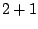
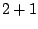

Next: About this document ...
An additive Schwarz parallel approach to space-time
finite elements for hyperbolic equations
Matthew Anderson
Louisiana State University Dept. of Physics & Astronomy
202 Nicholson Hall Tower Drive, Baton Rouge LA 70803-4001
matt@phys.lsu.edu
Jung-Han Kimn
We study a time parallel space-time finite element approach
for the nonhomogeneous wave equation using a continuous time
Galerkin method and a time decomposition strategy for
preconditioning. Space-time finite elements provide some
natural advantages for numerical relativity in black hole
simulations. With space-time elements, time-varying
computational domains are straightforward, higher-order
approaches are easily formulated, and both time and spatial
domains can be discretized using a more general mesh. We
present fully implicit examples in  , , and
, , and  dimensions using linear quadrilateral, hexahedral, and
tesseractic elements. Krylov solvers with additive Schwarz
preconditioning are used for solving the linear system. We
introduce a time decomposition strategy in preconditioning
which significantly improves performance when compared with
unpreconditioned cases. Parallel performance results are
also given.
dimensions using linear quadrilateral, hexahedral, and
tesseractic elements. Krylov solvers with additive Schwarz
preconditioning are used for solving the linear system. We
introduce a time decomposition strategy in preconditioning
which significantly improves performance when compared with
unpreconditioned cases. Parallel performance results are
also given.
Bruce Fast
2006-03-11